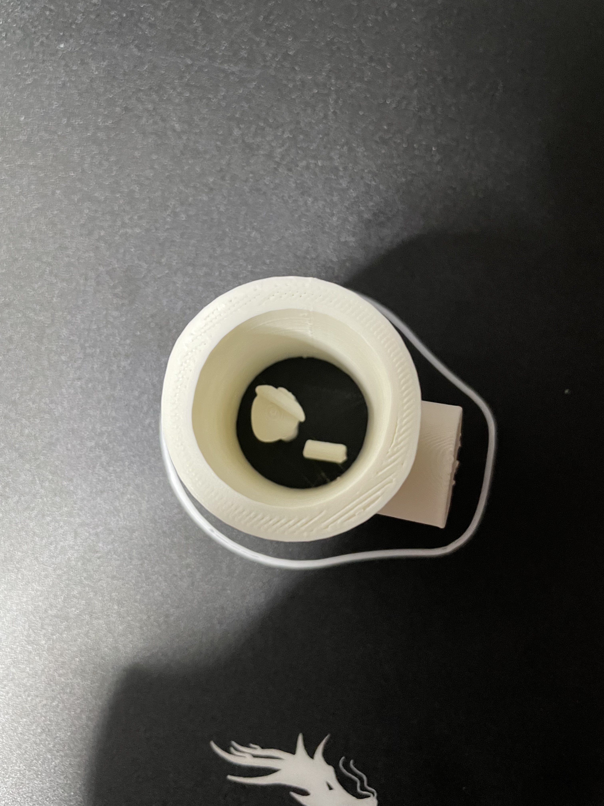
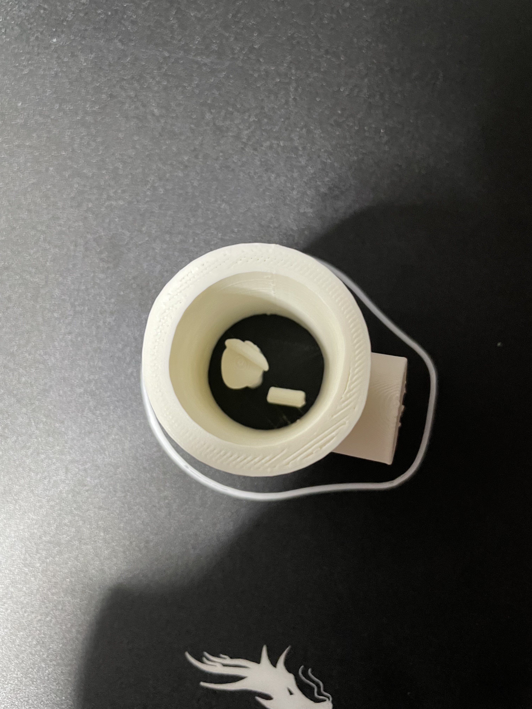
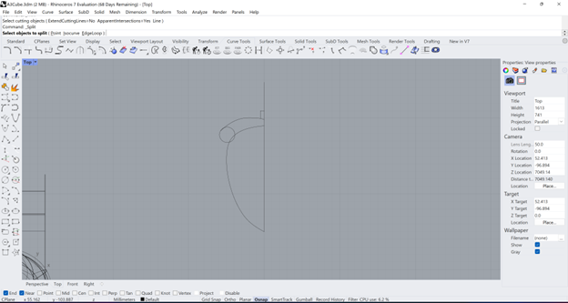
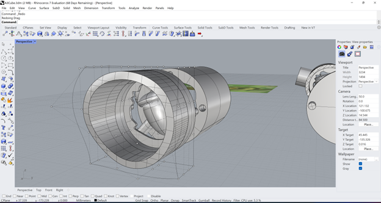

Belinda Bleeker's Assignment 3!

Okay buckle up this is a lot, separated into parts so I don't go insane! (｡•̀ᴗ-)✧
Part 1:
First for this assignment I had to set-up my 3D-Printer. That took about an hour and 40 minutes. I watched the tutorial video first and afterwords put it together, getting a baseline for everything first helped. Then I set out to actually put it together. I got lucky my bed was secure, and the extruder didn't wiggle from the start.


Once I finished assembling everything (pleasae ignore the mess), I moved it to a desk and checked every bolt was secure. With that complete I did a little shake test (the desk was somewhat unstable), and it passed with flying colors.


Part 2:
Next was to level the bed. Oh boy, was this a pain. The back left skrew was initially jammed and I think I spent over an hour testing again and again until it was level. I was unable to get the bed to level with the glass top, for whatever reason it just didn't work so I leveled it with the magnetic bed. Here is the proof of my long and tedious work.


On to part 2, the cubes. I foolishly made my first file in CM, as the measurements were asked in CM. There I made a 2x2 square and extruded it by 2. Once I realized Cura worked in MM I changed the file units to MM so the cube was 20x20x20.


With that finished I moved to Cura and created the Gcodes. The first step was to export the cube in MM to an .Stl file. Then use the Cura settings to print: one Low Quality, one Standard Quality, one Super Quality, and one Standard Quality with a concentric top and bottom (Thank you Andy Moon!). Below are the prints with the times and measurements on the sticky note attached.
Part 3:
Now we have reached the tubes and cylinders. I started with the cylinders as I thought they would be easier to make. I created a 30MM (3CM) circle using the circle tool.
Next I used the solid tool, "extrude closed planar curve" with an extrusion of 30. This created the base cylindar. Finishing this process I exported it as an .S0tl file.
I had two versions, one exported with .1MM tolerance and one with .001MM tolerance.
To make the tubes, I used the "tube" tool in solid tools. I initially tried to make two cylindars and cut one out of the other but my s/o showed me the tube function.
I made the "tube" with a 15 radius and an inner radius of 14.6. This made the .4 one extrusion distance becasue my nozzel is .4MM which I double checked with the length function (line placed across the tube extrusion). (Thank you to Jesslord!).
This tube was also exported as an .Stl file.
Lastly, I took the two .Stl files and put them on Cura using the specific paramaters in the assignment.

Tubes: 1 Single extrusion & 1 double extrusion with a random z-seam alignment.
Below are the prints with the times and measurements on the sticky note attached.

Cylinders: .1MM tolerance, .001MM tolerance, spiralize outer contour mode, and printed on the side with supports
I did end up taking off the supports of the last cylindar to see how that worked before I measured it.
Below are the prints with the times and measurements on the sticky note attached.

.gif)
Part 4:
Finally we reach my nested object. I got hyperfocused on one idea, and jumped with it. I wanted to make a korok acron in a log.
I made the log using a tube and cylinder. I overlapped the cylinder so it would stick out, and angled it so it wasn't horizontal.
Next I used the trim tool to remove the parts of the cylinder that went inside the tube.
For the acorn I had my s/o show me first. I then used solid tools to make a curved bottom shape, a smaller curved top and a cylinder at the top.
I then used fillets to curve the pieces to the right shape.
I made all of them solid and then joined them together.
lastly I made a small cylinder that I placed within the tube and acron, I cut out the shape of the cylinder with "boolean difference".
Lastly I moved the acron and cylinder so they would print nested. Printing took 2h and 41min.
 This is how they printed as a nested object (the final result)

This is how they printed as a nested object (the final result)

Part 5:
Now I know I said I was finished, but my artistic side would not let me accept this as my final korok acorn and it was still Monday, so I did what a crazy person does and went for it. I pulled up an actual image from the game. Secondly I asked my s/o if he could show me how to accomplish my thoughts and he gave me a demo on specific parts I asked him about. I foolishly tried to do a lot on my own with little guidance and thus I tried many variations and ways to get this done. I will be sharing the sucessful attempts. First: The Log. I used the same steps as before but scaled the log smaller to match the acorn more accurately. Second: The Acorn. The acron was made by creating a curve of half the acorn. This used the "curve interpolate points" tool along with a circle and line. The next part was turning it into a surface, in surface tools I used the "surface from planar curves" to do this. Next I used the command revolve, the axis is set to the line side of the surface, and done twice with angles 180 degrees and -180 degrees.
{kind=link}

Third: A back piece for the log. I first placed 4 cylinders along the back rim that went into the model. Then I extruded a circle the same radius as the log and extruded that strait backwards. Then I used "Buleon union" to combine them. Once I had a solid piece I copied it and used "buleon difference" to cut out the cylinders from the log. Lastly I repasted the back piece.

With all the pieces made I then moved them so they would print nested and put it in cura.
The final print took 2 hours 13 minutes and 35 seconds. However, the back and front of the log were not able to connect because the holes were too small. This is what I get for making it tiny. My s/o (I cannot praise him enough) graciously used some of his power tools to open up the holes so they would fit. He also had to end up clipping the pieces so they would fit better.

Documentation:
Rhino File I am so sorry it is a mess.
Cube.Stl file Tube.Stl file Cylinder.Stl file Cylinder.001.Stl file Cylinder on its Side.Stl file Nested Try 1.Stl file Final Nested.Stl file Back of Log.Stl file Front of Log.Stl file
Acknowledgements
My S/O (Peter) for demoing a lot of the steps I needed for my final deliverable and fixing the pins for the log.
Both Jesshord & Andy Moon for clarifying some assignment details, on the discord!
And my friend Dana for helping me put this site together
Return to index